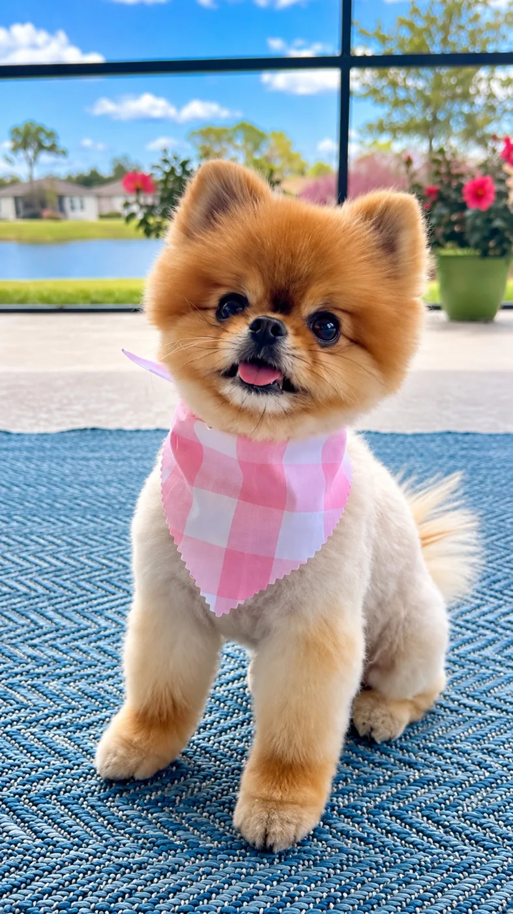
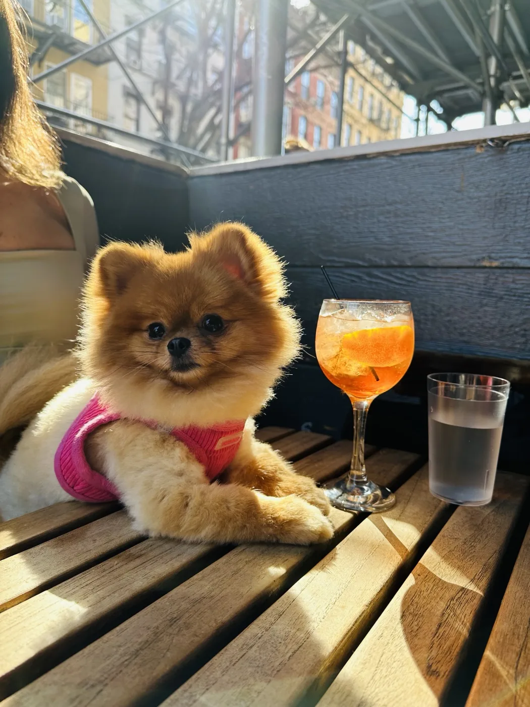
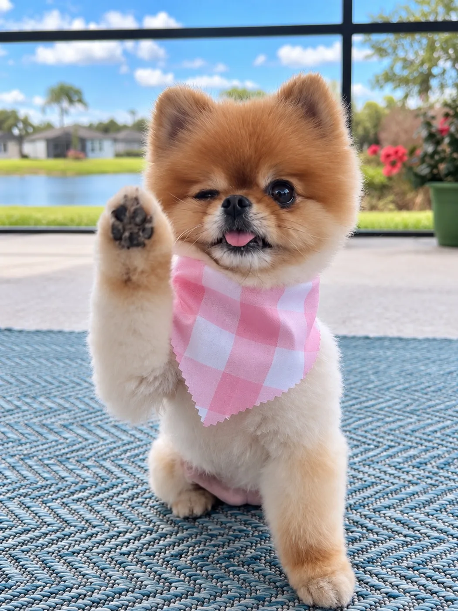
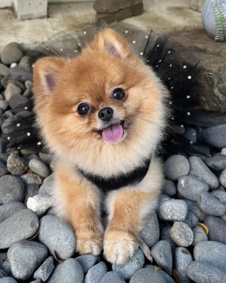
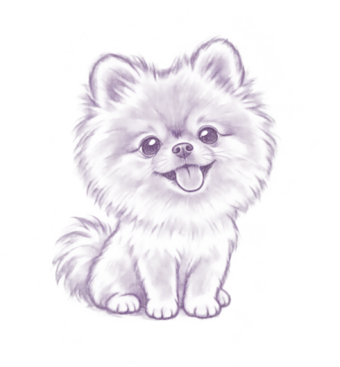

Little dog.
Big personality.
Hi, I'm Kiwi! Part-time angel, full-time diva, and professional collector of treats, cuddles, and compliments.

Meet the little legend
She's tiny, she's fluffy, and she's convinced the world revolves around her.(We're not saying she's wrong.)

Hi, I'm Kiwi! 🐾
I'm Kiwi, a 5-year-old Pomeranian born October 15, 2021. If my adventure bag comes out, I'm already in it. I have major FOMO, love to dance, and will happily roll around in the grass all day.
My favorite food? Cheese, obviously. Come follow along for little adventures, big feelings, and plenty of Kiwi-sized chaos.
Kiwi's favorite finds 🛍️
From cute accessories to everyday essentials, discover the things that make Kiwi's little world extra special.
Visit Kiwi's Amazon Storefront ↗As an Amazon Associate, I earn from qualifying purchases.

Big ideas?
Tiny business partner.
Kiwi is accepting inquiries for brand partnerships, creative collaborations, and opportunities involving treats. Her management (Mom) handles the emails.
Let’s Collaborate 💌
Kiwi's Little
Doodle Diary ✏️
100 tiny sketches. One very big personality. A growing collection of Kiwi's adventures, one doodle at a time.
Explore the collection, then visit each original Facebook post to join the conversation.

100 little doodlesone very big personalityExplore the diary ↗